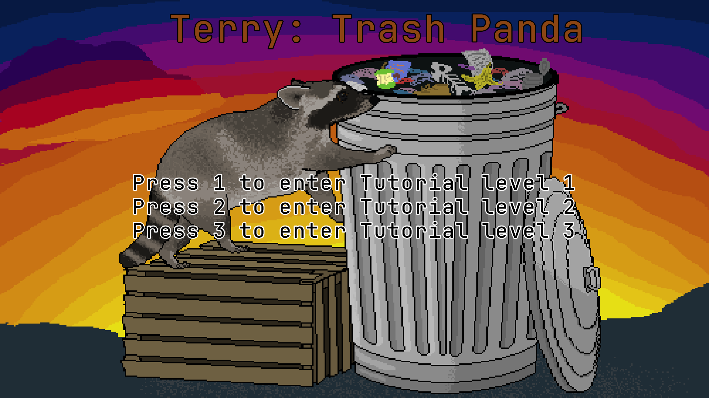
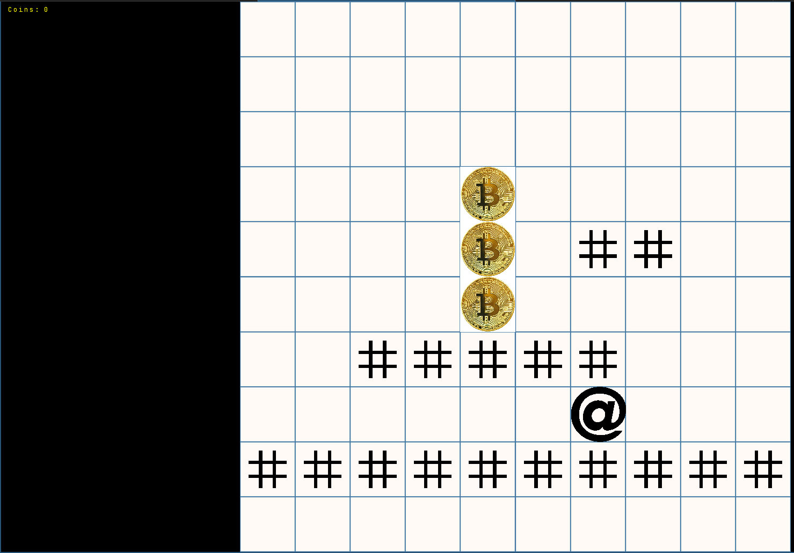
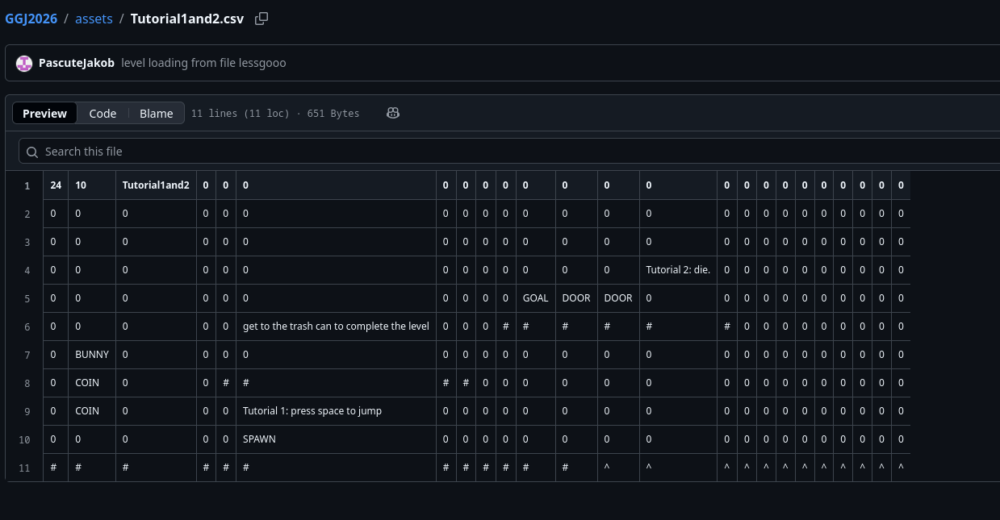

Projects
The home of the finished and unfinished
Terry Trash Panda
github linkTake control of our friend Terry and guide him to what he desires: trash.

More info (click to expand)
My team's submission for Global Game Jam 2026, a weekend event that was hosted at Purdue Fort Wayne. Our team consisted of three friends, two computer science students, and one dedicated artist. For this game jam, the theme was kept secret until that weekend, forcing us to think on our feet and come up with ideas and start implementing that same day. The theme for this year was "mask".
Before the event started we had decided on using Java with the libGDX framework, and I had done enough of the tutorial to draw a sprite on screen and capture keyboard input. Ultimately we decided on making Terry a 2d platforming racoon because the scope of the project seemed feasible, a few levels, some powerup "masks", a CSV stage parser, and a homemade physics engine... I don't think I slept that entire weekend.
There's some aspects of this project I still find interesting and i'd like to talk about them, so I will. Being one of our first real attempts at game development, the entire weekend was us hitting walls, figuring it out, and hitting more walls. The first day and night I spent working on getting the physics to feel "good" to me. I had the character rendered as an @ symbol, platforms were rows of #'s, a png of graph paper was the background, the bare minimum to start doing physics math.

Physics Engine Quirks
Of course I immediately ran into issues, the overlap math for collisions was working, somewhat. I had set it so that if Terry ran into the edge of a block, he would simply be repelled a pixel or two away. This caused me hours of pain and suffering, a literal Corner case where running into a block's corner had unpredictable outcomes due to my shifting of Terry's position. Depending on the angle Terry was coming from, you could snap him onto the block and stop all momentum in the original direction. After hours of tweaking logic and getting it as close as I could, I decided it was a feature.
The next quirk I encountered was the fact that we wanted Terry to be able to jump off walls and not just the ground. Changing the logic itself was not that bad, but I didn't take into account the direction he was facing, I had programmed it to propel Terry backwards because I assumed he was facing towards the wall. We discovered that the user could turn Terry around right before jumping and propel him backwards into the wall. This allowed you to repeatedly jump and ascend the vertical wall. We decided that it was too funny to fix and it became a feature, calling it "our backwards long jump".
Creating and loading stages with CSV
I really really like this part of the project and I think it did exactly what we needed from it. We designed all of our levels in a spreadsheet. Symbols or entire words were designated to represent the platforms, spikes, powerups, spawnpoints, goals, and coins. The motivation for this stemmed from two places: we wanted our non-programmer in the group to have an easy way to design, load, and play stages, and we also needed to be able to quickly alter designs while playtesting. What results is mostly string manipulation to map the elements of the CSV file to in game objects, which are drawn into the game world using a grid system to evenly space everything.


FPS dependent
We coded and tested everything on our regular laptops. The game ran great, and most importantly it felt good to control the character. I send the executable to a friend to test it out, and they say its completely unplayable, something with the physics. They're on a gaming computer with a dedicated GPU, we had accidentally made everything dependent on the machines FPS. The only consistent way to experience our vision for the game was on our laptops, hilarious in hindsight, pretty upsetting in the moment.
Assuming Java runs everywhere
30 minutes behind submission deadline we were trying to figure out how to compile this to run on Windows. Apparently libGDX wants to compile to native code, figuring that out while you are stressed about being late, having to go present infront of people, and not having slept all weekend was an insurmountable task. We presented the game running on my laptop, straight from my Intellij IDE.